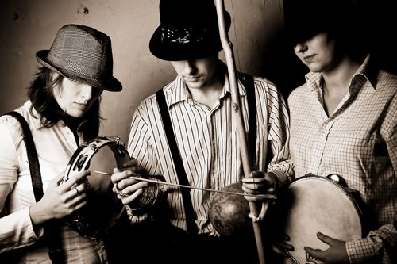
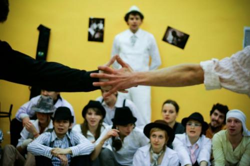
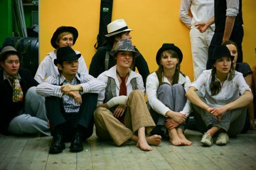
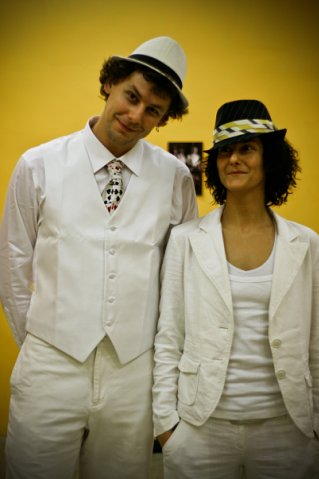
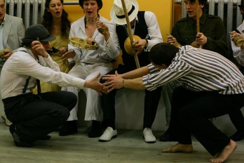
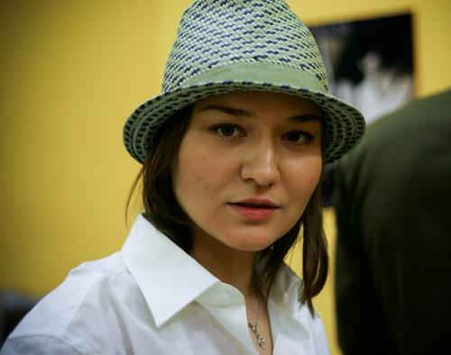
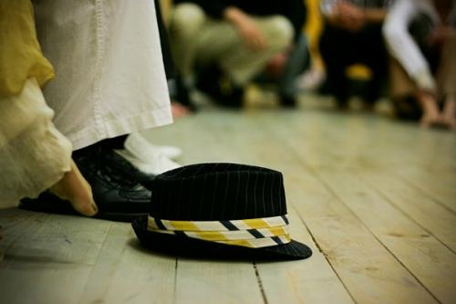

Стильные игры
13 февраля 2010 года
Стильные игры
Санкт-Петербург

Идея проекта «Стильные игры» бродила в наших питерских головах давно. Мы смотрели на стариканов-мастеров в белоснежных костюмах, на щеголеватых парней в шляпах – на людей, которые играли капоэйру в самой, казалось бы, неподходящей для этого одежде. И было в их игре что-то такое же стильное и элегантное, как и их костюмы. Мы решили проверить, влияет ли стиль одежды на стиль игры.
UPD. добавлено видео
13 февраля 2010 в Санкт-Петербурге прошли первые экспериментальные „Стильные игры“ под девизом «Играй красиво!». Организация: Botafogo, Te-man (Gvozd).
Идея была такова: если ты пришел красиво одетый, то будь добр и играй красиво. Мы продумали строгий дресс-код: костюмы, ботинки, рубашки, шляпы. К нашему удивлению, гости с удовольствием соблюдали этот дресс-код, раздобыли где-то все необходимое и все вместе мы выглядели очень эффектно!



У нас в гостях были также другие города – Москва, Новосибирск и Одесса, за что им отдельное респектище.
Подводить какие-то итоги весьма сложно, особенно если ты организатор и тебе приходится подсчитывать не только похвалы, но и шишки.
Что мне однозначно понравилось:
- то, что началась движуха! Общие роды уже не взывают буйного восторга, нам нужен был новый формат и, как мне кажется, мы смогли предложить что-то действительно новое.
- удавшийся сюрприз в конце Роды, прекрасный полисмен Cajueiro и самба!
- то, что народ не поленился и достойно подготовился! Повторюсь – зрелище было эффектным.
- приятно было видеть гостей – не только иногородних, но и питерских, с которыми редко удается поиграть на общих мероприятиях – Abada, Angola. Мы подавали наше событие как Рода без логотипов и эмблем, но так как все равно все друг друга знаем… в общем, всегда рады видеть редких гостей.
Что мне не понравилось:
- неполный состав. К сожалению, не все, кого мы хотели видеть, смогли прийти. Причем, по печальному совпадению не смогли появиться все «старшие» капоэйристы Питера – Axe, Cantor, Linguado из Mundo Capoeira, Ta Russo из CDO и Compasso, который некстати умотал обратно в Бельгию именно в это время. По моему ощущению, рода от этого сильно пострадала.
- нестильные игры. К сожалению, стиль присутствовал лишь в одежде. На деле кто как играл, так и продолжал играть. Рода рвалась, возникала суматоха, было и неуважение, и грубость, и много того, что лично мне очень не по душе.
Плюс к этому много мелких уроков для себя, много противоречивых эмоций, новых мыслей, что всяко в плюс.



Скажу еще, что новые стильные игры уже продумываются, ждите новостей.
Надеюсь, что мой главный прекрасный напарник по этому безобразию — Артем — добавит свое организаторское слово.
Ну и многочисленные спасибо за участие и поддержку!
Главное, что мы получили — кайф от игры и от капоэйры!
и да, надеюсь, Сет выложит видеозапись
и да, он выложил видеозапись))